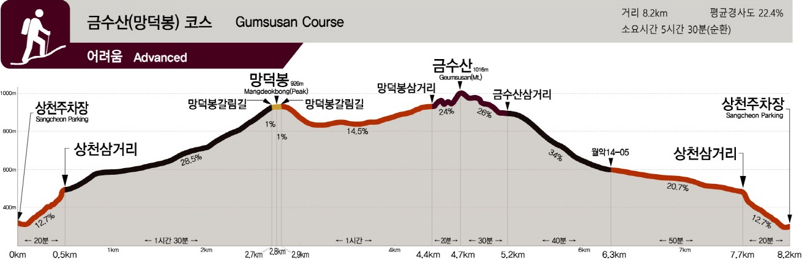
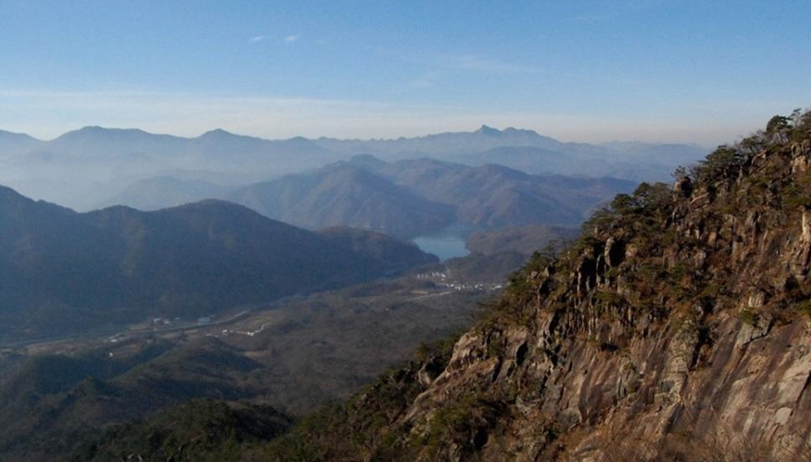
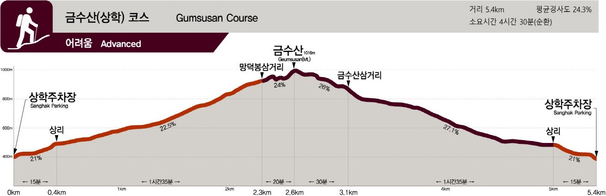
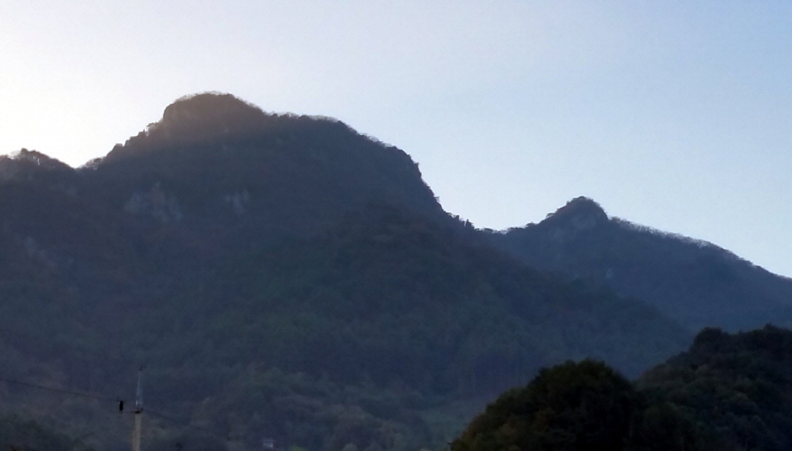

상천주차장~상천삼거리~망덕봉~금수산~상천주차장 코스(8.2km, 5시간 30분 소요, 순환)
비단으로 수를 놓은 듯 아름다운 금수산(錦繡山), 월악산국립공원 최북단 탐방코스
- 망덕봉 방향으로 오르는 초입에서 용담폭포를 만날 수 있으며 골짜기를 따라 정상으로 오르는 금수산의 대표
탐방코스
- 퇴계 이황선생이 이름을 바꿔 부르도록 했다는 이야기가 전해지는 월악산국립공원 내 대표적인 명산



- 

상학주차장~상리~금수산정상~금수산삼거리~상학주차장 코스(5.4km, 4시간 30분 소요, 순환)
충주호의 수려한 경관과 남근석공원, 가을철 단풍을 만끽할 수 있는 코스
- 상학주차장에서 출발하여 단풍나무 숲과 도라지 밭을 지나 완만한 경사를 오르면 남근석공원이 나온다.
- 금수산 정상, 서팽이고개를 지나 상학주차장으로 원점 회기가 가능한 탐방로



- 